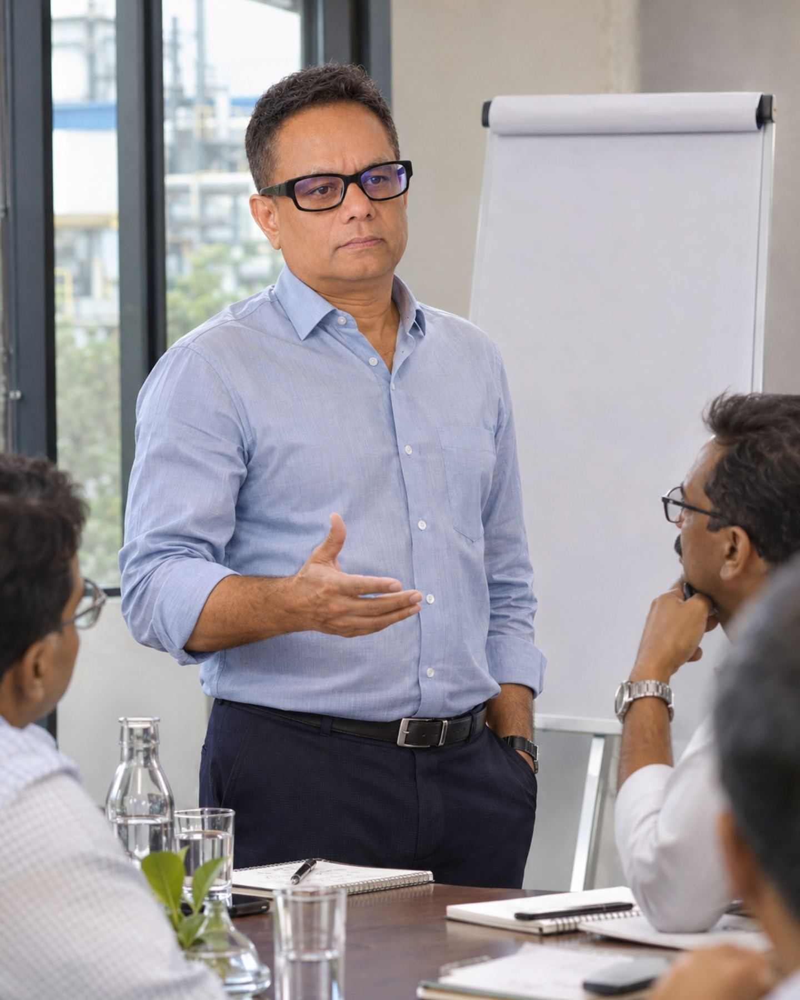
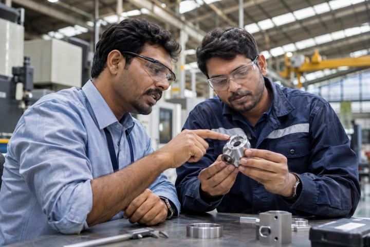
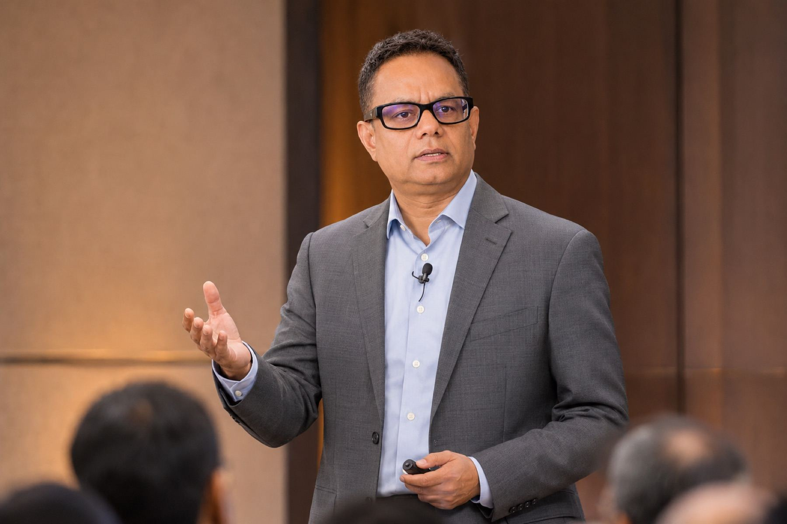
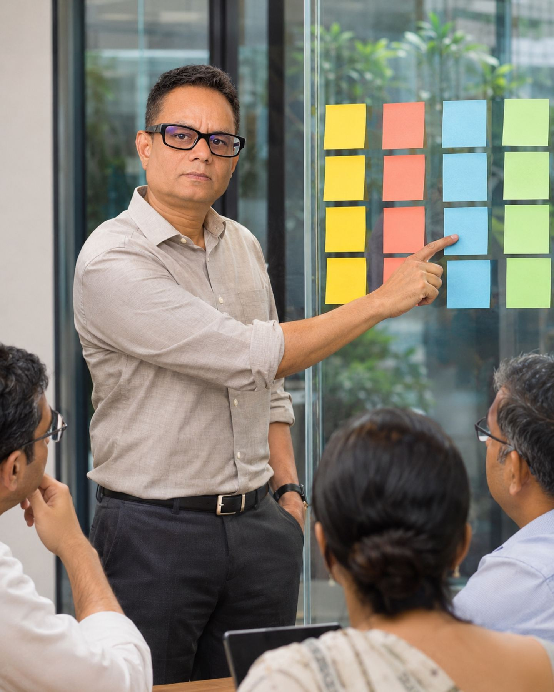

Beyond advice. Accountable for outcomes.
Business growth, sales effectiveness and people strategy for industrial B2B organisations.
Head & Tail Asia works with business owners, CEOs and business leaders to address the challenges that hold growth back—from go-to-market choices and sales execution to leadership capability, organisation effectiveness and people practices. We combine commercial understanding with hands-on implementation support, helping your strategy translate into action and measurable progress.
Start here
What leaders say
“A valuable practical perspective that can create meaningful value for any organization.”
“A thoughtful and insightful people leader with a strong strategic perspective.”
“First-hand sales experience and deep people expertise.”
“Coaching rooted in real leadership experience.”
“Translating strategy into stronger people and better performance.”
“Creativity and passion for doing things differently set him apart.”
Good strategies need strong execution—and the right people systems.
Industrial businesses rarely have just one isolated problem. Growth may be constrained by an unclear market focus, inconsistent sales processes, underperforming channels, gaps in leadership capability or HR practices that are disconnected from commercial priorities. These issues often reinforce one another.
Head & Tail Asia looks across the business, sales and people dimensions to identify what is getting in the way, agree the priorities and work alongside your team to put practical improvements into action.
About our approach
Interventions built around your business priorities
Business Strategy & Go-to-Market
Clarify where to compete, which customers to prioritise, how to differentiate and how to take your offer to market.
Learn moreSales Effectiveness & Growth Acceleration
Strengthen the sales process, pipeline discipline, opportunity conversion, forecasting, key account management and sales leadership.
Learn moreChannel & Distributor Effectiveness
Improve channel design, distributor selection, onboarding, joint business planning and channel-sales capability.
Learn moreMarketing & Market Development
Align positioning, customer engagement and marketing priorities with the markets and growth opportunities that matter.
Learn moreLeadership Coaching & Development
Help leaders build commercial judgement, ownership, adaptability and the ability to develop others—through coaching integrated with real business priorities.
Learn moreHR Strategy & Organisational Effectiveness
Align roles, performance management, rewards, engagement, talent development and succession with business goals.
Learn moreOrganisation Transformation & Change
Support leaders in clarifying structures, responsibilities, ways of working and the changes needed for the next stage of growth.
Learn moreBusiness-led. People-aware. Focused on implementation.
- A commercial perspective shaped by experience in Sales, Marketing and P&L leadership, alongside senior HR leadership.
- An integrated view of business performance: market choices, sales execution, leadership and people systems.
- Practical interventions designed around the organisation's actual context—not off-the-shelf answers.
- Close partnership with leaders and teams through diagnosis, co-design, implementation and review.
- A boutique approach that stays close to the problem and the people responsible for solving it.
We do not believe advice alone creates change. Progress comes from making the right choices, translating them into action and building the ownership to sustain them.
About our approachTop Insights
 Insight #01How to Manage People Who Are Older and More Experienced Than You
Insight #02When Your Best Salesperson Becomes Your Biggest Management Problem
Insight #01How to Manage People Who Are Older and More Experienced Than You
Insight #02When Your Best Salesperson Becomes Your Biggest Management Problem

Insight #03How to Manage a Salesperson Who Knows the Customer Better Than You Do Insight #04When Two Senior Salespeople Are Fighting Over the Same Customer
Insight #04When Two Senior Salespeople Are Fighting Over the Same Customer
 Insight #05How to Deal With a Salesperson Who Always Has an Excuse for Missing Targets
Insight #05How to Deal With a Salesperson Who Always Has an Excuse for Missing TargetsSearch 50 field insights.
Find the answer you need.
Unlock practical answers from Head & Tail Asia on industrial selling, sales teams, customers and distributors. Fast.
From diagnosis to sustained action
- Diagnose — Understand the business context, current performance, data and perspectives of key stakeholders.
- Co-design — Agree the problem to solve, define success and develop a practical intervention with your team.
- Implement — Work alongside leaders and teams through working sessions, coaching, tools, reviews and on-the-job support.
- Sustain — Establish simple measures, review rhythms and ownership so progress continues beyond the intervention.
 Field Notesfor industrial leaders
Field Notesfor industrial leadersField Notes. One practical idea for industrial leaders.
Simple, practical and direct. Once a month.
Placeholder Connect to your email platform on WordPress.

Experience across the business and people agenda
Hey, I’m Ajit.
Head & Tail Asia is led by Ajit Jain, whose 30+ years of industry leadership span Sales, Marketing, business and P&L leadership, and senior HR responsibilities. This combination brings a practical understanding of the connection between commercial ambition, organisational capability and people performance.
Meet the FounderHave a business challenge that needs more than a recommendation?
Let's understand what is holding performance back and identify the intervention that can move it forward.
Contact: ajit.jain.gsti@gmail.com
Start a Conversation